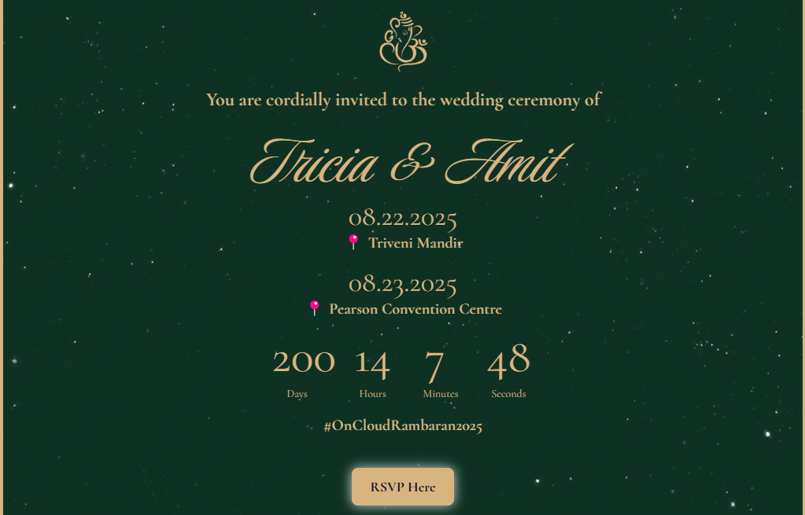

Featured Project
T Weds A
Next.js
JavaScript
HTML/CSS
A polished event website designed to make logistics feel effortless, with RSVP actions, event details, and visual storytelling arranged for quick decisions on mobile and desktop.
- Prioritized the key guest actions first so visitors can find what they need without hunting.
- Used Next.js to keep the site lightweight, reliable, and easy to scale with content updates.